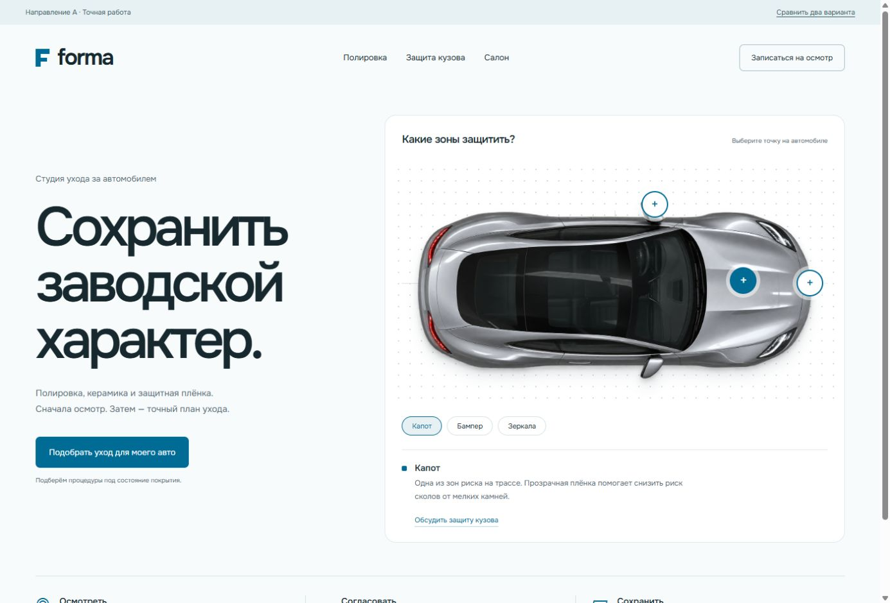
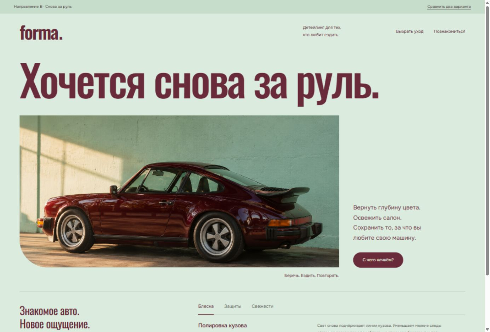

A
Точная работа
Технология, понятная владельцу.

Светлая студия, вид кузова сверху и выбор зон защиты. Для клиента, которому важно разобраться в процедуре.
Открыть направление AРаботаем над характером FORMA
Выберите направление первого экрана. В каждом — своя композиция,
типографика и взаимодействие с посетителем.
Технология, понятная владельцу.

Светлая студия, вид кузова сверху и выбор зон защиты. Для клиента, которому важно разобраться в процедуре.
Открыть направление AЗабота как часть автомобильной культуры.

Выразительный шрифт, тёплая фотография и выбор ухода по ощущению. Для студии с характером независимой мастерской.
Открыть направление B